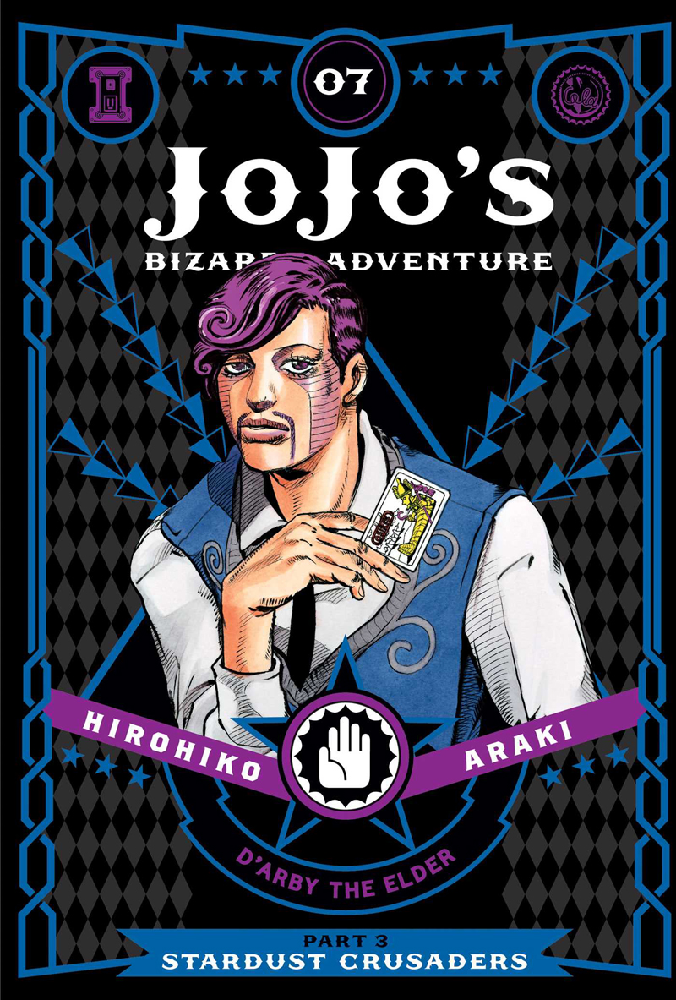
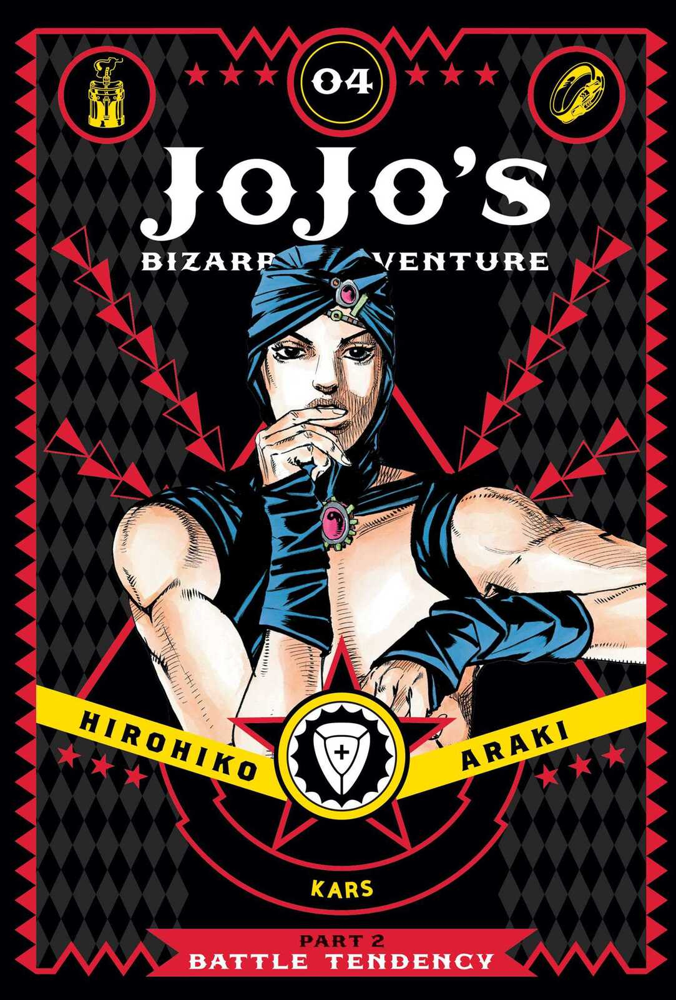
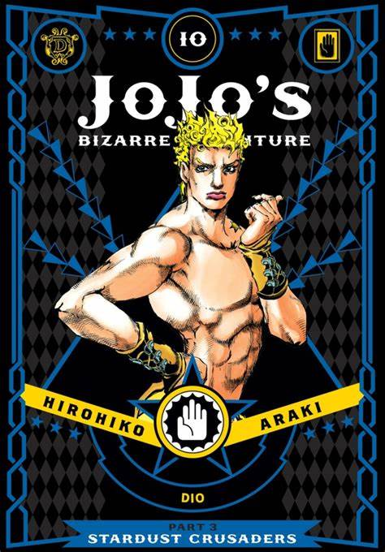
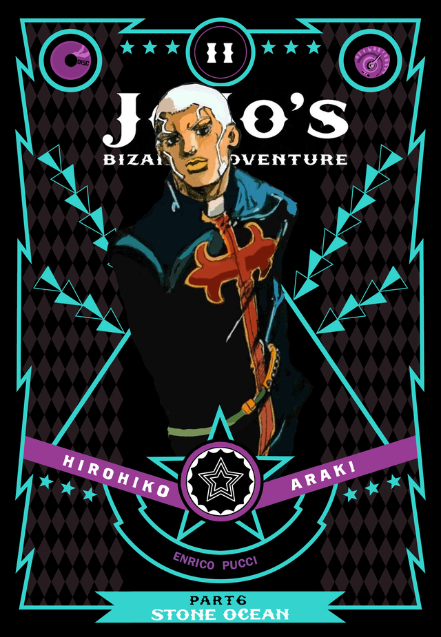

Guinness Wereldrecord: One Piece heeft het Guinness Wereldrecord voor de "Meeste exemplaren gepubliceerd van dezelfde stripboekserie door één auteur". Vanaf december 2020 waren er wereldwijd meer dan 480 miljoen exemplaren van de mangaserie in omloop, waardoor het de bestverkopende mangaserie aller tijden is!




🛍️
3. Snel zoeken!
🚚
4. Snelle Levering!
💳
1. Beveiligd Betalen!
🛒
2. Snel in je winkelwagen!
Gaaf Product
Leuken accessoires voor boeken vind je hier in Kenobie's Mangastore.
Pinguin boeken houder voor je manga.
1. Ik ben zo blij dat ik deze geweldige manga-webshop heb ontdekt! Ze hebben een enorme collectie manga's waaruit ik kan kiezen, inclusief de nieuwste releases en klassiekers. De website is gemakkelijk te navigeren, waardoor het vinden van mijn favoriete manga's een fluitje van een cent is.
Jeroen Elswijk
★
★
★
★
★
2. De kwaliteit van de manga's is ook fantastisch. Ze zijn goed verpakt en in uitstekende staat bij mij aangekomen. Ik waardeer echt de aandacht voor detail die de webshop aan elke bestelling besteedt. Enigste probleem is dat het een beetje lang duurt voordat het verzonden is naar mijn adres.
Seahm Indog
★
★
★
★
3. Als een gepassioneerde manga-liefhebber ben ik dolblij met deze uitstekende manga-webshop. Ze bieden een breed scala aan manga's in verschillende genres, waardoor ik altijd iets nieuws en spannends kan vinden om te lezen. Ik kan niet geloven dat deze winkel zo goed is! Ik recommend deze shop.